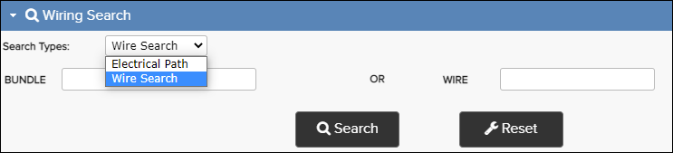
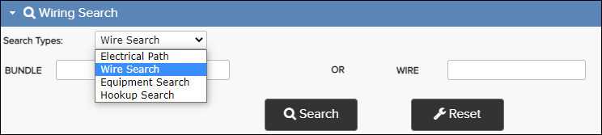
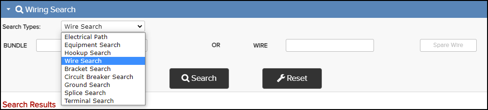

Wiring Search - Airbus

Wiring Search - C-Series (A220)

Wiring Search - Boeing
| Publication Builder | Wiring Publications | Supported Search Types |
|---|---|---|
| A350 | ASM, AWL, AWM | Wire, Electrical Path |
| B787 | SSM, WDM | Wire, Equipment, Hookup |
| C-Series | ASDP, AWDP | Wire, Equipment, Hookup, Electrical Path |
| S1000D | Any publication which contains Equipment Lists (info code 056), Wire Lists (info code 057), or Bundle Lists (info code 058) | Wire, Hookup, Equipment |
| KCA | Airbus: AWL, AWM, ASM Boeing: WDM, SSM | Airbus: Wire, Electrical Path Boeing: Electrical Path, Equipment, Hookup, Wire, Bracket, Circuit Breaker, Ground, Splice, Terminal |